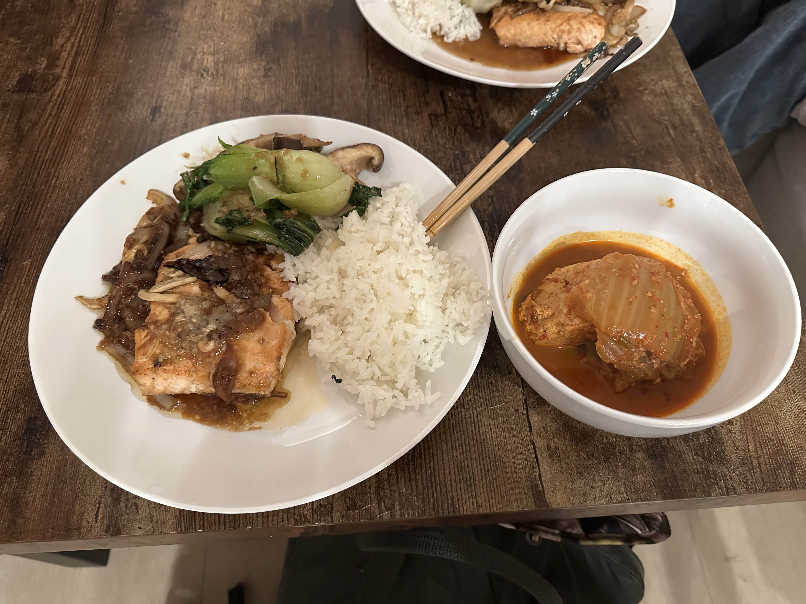

Home
Salmon & Mushroom Soy Sauce Braise

Salmon and oyster mushrooms braised in soy sauce based sauce
Ingredients
- 1 serving of salmon
- 1 serving of oyster mushrooms
- Half a white onion
- 2 spoons of garlic puree
- 2 spoons of soy sauce
- 1 spoon of oyster sauce
- 2 spoons of cooking wine
- 2 spoons of water
- 1 spoon of oligosaccharide
Steps
- Cook salmon till both sides are cooked
- Put in mushrooms, onions, and garlic
- Make sauce and pour in
- Braise everything with lid on for 4 minutes
- Cook another minute without the lid